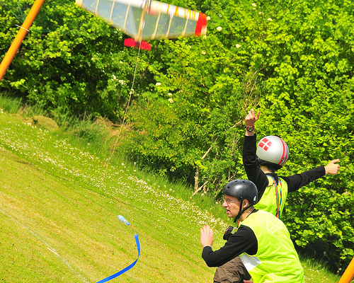
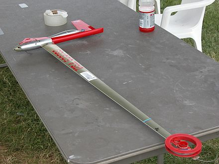
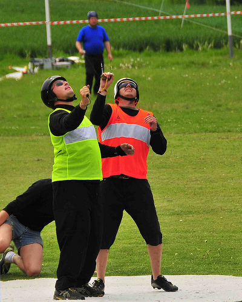
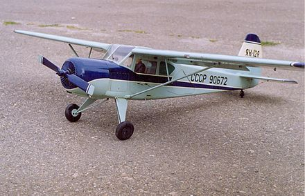

Кордові літаки
Ко́рдова а́віамодель (англ. Control line, U-Control) — модель літака з двигуном, що літає по колу, утримується та керується двома тонкими сталевими тросами, кордами (від англ. cord — шнур, мотузка). Вони порівняно прості в експлуатації, за своїми формами можуть бути схожі на справжні літаки або мати вільну нескладну конструкцію.
Запуск кордової моделі повітряного бою
Техніка та політ
Кордові літаки виготовляють із традиційних в авіамоделізмі матеріалів: бальзова та липова деревина, соснові рейки, авіаційна фанера, мікалентний папір, лавсанова плівка. Найпростіші тренувальні кордові авіамоделі можуть мати пласке крило та необ'ємний (контурний) фюзеляж. Пілотажні, та інші спортивні моделі, мають достатньо складну конструкцію. Кордові моделі, як правило, оснащуються двигунами внутрішнього згоряння об'ємом 1,5—10 см³. Їх запускають на рівному спеціальному асфальтовому або звичайному трав'яному майданчику (кордодромі) діаметром 45—50 м.
Модель літака з двигуном літає по колу та керується пілотом, який знаходиться в центрі цього кола. Пілот управляє моделлю за допомогою двох тонких сталевих корд прикріплених до рукоятки управління, яка знаходиться в руці. Інший кінець тросів закріплюється в моделі, і спеціальним механізмом перетворює переміщення руки в рухи стерна висоти, що дозволяє маневрувати моделлю. Пілот повертається слідом за моделлю і контролює її положення в повітрі.
Модель може літати горизонтально або виконувати різні еволюції в межах півсфери над землею, радіусом півсфери є довжина корди. Діаметр сталевого корду близько 0,3 мм, а довжина не повинна перевищувати 21,5 метра. Літаки можуть злітати з колісного шасі, або запускатись прямо з рук.
Моделі копії часто оснащують додатковими кордами для керування демонстраційними функціями. Останнім часом стало можливим оснащувати кордові моделі безколекторними електромоторами з контролером, та легкими літій-полімерними акумуляторами встановленими на борту.
Історія
Французький винахідник Альфонс Пено, досліджуючи можливості повітроплавання, створив оригінальну літаючу модель з гумовим двигуном. Її політ він продемонстрував в 1871 році у Французькій Академії Наук. Модель з штовхаючим повітряним гвинтом, розмахом крила 450 мм, вагою близько 15 г, пролітала відстань 36—40 метрів протягом 10—11 секунд. Цей літачок, названий автором «планофор», можна назвати першою авіамоделлю, адже її конструкцію повторювали безліч любителів повітроплавання, випускалися набори-іграшки для її складання, проводилися змагання на дальність і висоту польоту.
Після польоту аероплана братів Райт, які відкрили епоху авіації, став розвиватися і авіамоделізм. Першими авіамоделями були вільнолітаючі планера і моделі з гумовим двигуном. Наприкінці 1920-х років, з появою невеликих бензинових двигунів, стали популярними і вільнолітаючі моторні моделі. Багато аматорів оснащували такі моторні літаки спеціальними програмними механізмами, які дозволяли виконувати політ за маршрутом і навіть фігури пілотажу.
Наприкінці 1930-х років, в США, деякі моделісти вже робили спроби запускати авіамоделі на корді. Це були системи, в яких модель закріплювалась на одному, який пілот тримав однією рукою, а через другий трос, іншою рукою утримував модель на потрібній висоті. Цей принцип не забезпечував чіткого управління літаком і був дуже незручним.
Американський винахідник Джим Волкер (англ. Jim Walker), аматор авіамоделізму з досвідом, зацікавився можливістю керованого запуску моделі по колу, на кордах. Виконуючи низку спроб, він визначив, що для досягнення стабільного польоту прив'язної моделі по колу, необхідно домогтися натягу кордів. Однією відцентрової сили для цього недостатньо, і Джим Волкер встановив двигун і вертикальне кермо з невеликим викосом, так щоб модель прагнула вийти з кола. Це забезпечило стабільний натяг кордів.
Для управління по висоті, на модель був встановлений трьохплечевий важіль (вісь його кріплення була близька до точки центру ваги літака) через який, рухи двох корд за допомогою тягла, передавалися на стерно висоти. Кінці корд закріплювалися на ручці управління U-подібної форми, яку пілот вертикально тримав у руці. Як корд застосовувався міцний і тонкий тканинний шнур. Коли моделі стали більших розмірів і оснащувалися більш потужними моторами, почали застосовувати тонкі сталеві троси. Джим Волкер отримав патент на свою систему управління польотом за допомогою двох тросів в 1942 році. Він назвав керовані таким чином моделі «U-Control Plane».
Заснована ним фірма American Junior Aircraft Company виробляла готові моделі, набори для їх складання, та приладдя для запуску. Джим Волкер був один з перших, хто виробляв моделі за концепцією «Ready-To-Fly», тобто комплект готових деталей, що вимагає незначного складання. У 1940 році він почав виробництво першої у світі серійної кордової авіамоделі «Fireball». Літак мав об'ємний бальзовий фюзеляж, профільне крило виготовлялося з бальзової пластини. На «Fireball» встановлювали бензиновий моторчик «Ohlsson.23 engines».
Класи моделей
Типова швидкісна модель F2A з двигуном 2,5 см³. Дуже довге крило діє як обтічник для кордів, що значно знижує аеродинамічний опір
На сьогодні Міжнародна авіаційна федерація (FAI) визначила ряд спортивних класів кордових авіамоделей:
- F2A — швидкісні моделі
- F2B — пілотажні моделі
- F2C — гоночні моделі
- F2D — моделі повітряного бою
- F4B — моделі-копії
Додаткові класи: F2H — моделі повітряного бою з компресійним двигуном; F2G — гоночні моделі з контурним фюзеляжем, та ін.
Кордові швидкісні моделі — клас F2A
Моделі для польоту на високих швидкостях. Об'єм двигуна обмежений 2,5 см³. Політ відбувається по колу фіксованого радіуса — 17,69 метра, потрібно пролетіти з максимальною швидкістю 9 кіл, що дорівнює відстані в 1 км. За колишніми правилами потрібно було пролетіти 10 кіл радіусом 15,92 метрів, але з метою підвищення безпеки польотів, правила були змінені для збільшення часу прольоту одного кола. На змаганнях швидкості моделей перевищують 300 км/год.
Дизайн моделей досить незвичний, більшість має лише одне крило та однолопатевий пропелер. Вага літака — приблизно 500 грамів, польоти виконуються на стандартному паливі (80 % — метанол, 20 % рицинова олія), оберти двигунів досягають 36 000 об/хв.
Кордові пілотажні моделі — клас F2B
Кордова пілотажна авіамодель в польоті
Великі та елегантні моделі які виконують комплекс фігур пілотажу. Модель, зазвичай, має калільний або електричний двигун. Пілот виконує певну програму вправ (комплекс), а судді виставляють бали за точність виконання маневру (від 0 до 10 з кроком 0,5).
Комплекс фігур, встановлений FAI, складається із 16 вправ, кожній вправі відповідає свій коефіцієнт складності. Всі маневри, за невеликим винятком, мають виконуватися на низькій висоті — 1,5 метра від землі в обов'язковій послідовності фігур пілотажного комплексу, та за обмежений час — 7 хвилин.
Основні характеристики моделей:
- максимальний розмах крила — 1,5 м;
- максимальна площа крила — 150 дм²;
- максимальне навантаження — 100 г/дм²;
- максимальний об'єм двигуна 10 см³ для 2-х тактних, 15 см³ для 4-х тактних;
- довжина кожної з корд не повинна перевищувати 21,5 метра, діаметр сталевого корду близько 0,3 мм.
Кордові гоночні моделі — Клас F2C
Моделі імітують групові гонки та піт—стоп. Пілот і механік складають екіпаж для запуску моделі що мають всі основні обриси гоночних літаків. Корд довжиною 15,92 метра, в колі літають одночасно три екіпажі. Завдання пілота—якнайшвидше пролетіти дистанцію 10 км. (100 кіл). Важливим є обмеження об'єму бака до 7 см³, тому для подолання дистанції доводиться зробити 2—3 піт-стопи для заправки.
Механіки перебувають за межами позначеного кола, вони здійснюють запуск двигуна та моделі на старті й під час дозаправки. Під час гонки пілот зупиняє двигун, коли розрахункове число кіл пройдено і садить модель. Механік ловить модель, що біжить по колу, заправляє її за допомогою спеціального пристосування і знову заводить двигун. У досвідчених екіпажів така зупинка триває не більше трьох секунд. У цьому класі моделі оснащені компресійними двигунами.
Основні характеристики моделей:
- максимальний об'єм двигуна — 2,5 см³;
- <максимальна вага — 700 г;
- мінімальні розміри моделі: фюзеляж довжина — 100 мм і ширина — 50 мм;
- модель повинна мати імітацію пілота в кабіні; мінімальний діаметр колеса шасі — 25 мм;
- двигун має бути повністю прихований всередині моделі.
Кордові моделі повітряного бою — клас F2D
Пілоти під час двобою моделей F2Dcombat

Модель літака для повітряного бою класу F2Dcombat
У колі, розташованому на трав'яному полі, два пілоти одночасно керують моделями з прив'язаною до фюзеляжу паперовою стрічкою. Мета маневрів — відрубати шматок стрічки у супротивника і не дати противнику відрубати стрічку у себе. За правилами FAI, кожен учасник може мати двох механіків і запасну модель для одного бою. Після закінчення бою (4 хвилини) підраховуються бали, кожен відріз приносить учаснику 100 балів. Крім того, враховується час проведений в польоті (1 бал за секунду) в межах бою, а за зіткнення в повітрі бали знімаються, а не додаються. Також існують пенальті (аж до зняття з бою) за різні порушення правил, наприклад, за пасивність у бою.
Попри всі зусилля, зіткнень у повітрі зазвичай важко уникнути (швидкість польоту літаків сягає 150 км/год), тому учасники змагань мають до десятка запасних моделей та 2—3 двигуни до них. Моделі дуже простої конструкції, недорогі, виконані за схемою літаюче крило. В основному класі F2D моделі оснащені двигунами із запаленням свічкою розжарювання, а в додатковому F2H — компресійними моторами. З міркувань безпеки, пілоти та механіки мають одягати захисні шоломи.
Основні характеристики моделей:
- максимальна площа — 150 дм³;
- максимальна маса — 5 кг (зазвичай вага
- моделі близько 400 г без мотора);
- максимальне навантаження — 100 г/дм²;
- об'єм двигуна — до 2,5 см³.
Кордові моделі-копії — клас F4B
Класична кордова модель копія літака Як-12А з двигуном об'ємом 10 см³. Конструкція П. Швидерського
У цьому класі моделісти змагаються в точності відтворення зовнішнього вигляду і реалізму літака-прототипу (стендова оцінка), та у виконанні фігур пілотажу властивих оригіналу. На змаганнях загальна оцінка за точність масштабного відтворення і майстерність виготовлення — це сума балів, що присуджуються трьома суддями. Ці бали використовуються при остаточному розподілі місць тільки в тому випадку, якщо модель виконала заліковий політ. Оцінюють також виконані в демонстраційному польоті різні функції (прибирання шасі, випуск закрилків, тощо). Керування цими функціями допускається по електропроводу або додатковому корду. Кожен учасник має в своєму розпорядженні 9 хвилин на виконання кожної польотної програми.
Основні вимоги до моделей:
- площа несучих площин — 150 дм²;
- маса (з паливом) одномоторних моделей — 6 кг, багатомоторних — 7 кг;
- робочий об'єм двигуна для одномоторних моделей — 10 см³, багатомоторних — 20 см³;
- <довжина корди 15—21,5 м;
- коло для польоту радіус — 26 метрів.